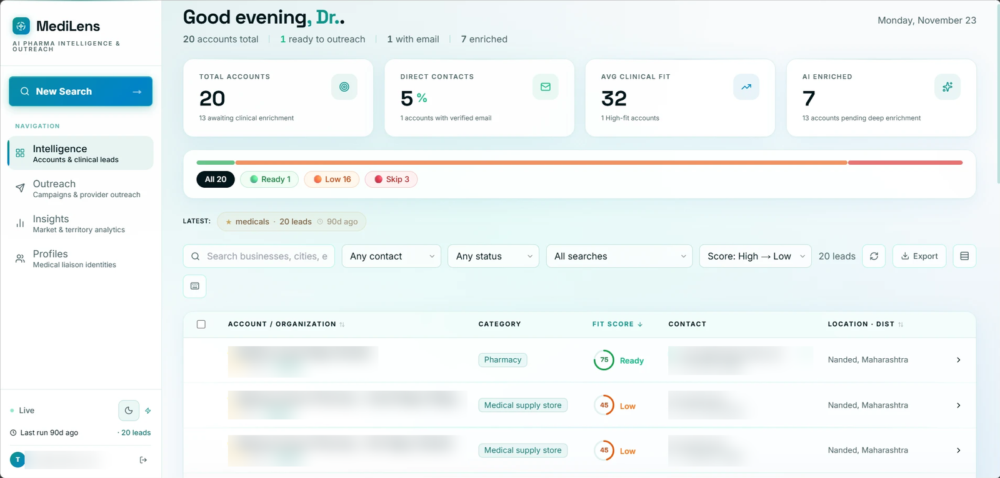

Product case study
MediLens
AI pharma intelligence and outreach, built for the medical market. It finds healthcare businesses on a map, enriches them with contact details, scores how reachable each one is, writes a personalised draft, and leaves the send decision to a person.
Honest status: built and deployed; one internal test run (20 pharmacies in one Indian city); no users, no launch, no results yet. I led the idea, plan, requirements and delivery; the engineering team built it.

Intelligence dashboard. Business names, phone numbers and emails are blurred.
- DiscoveryProblem, personas, jobs-to-be-done, competitor scan.
- DefinitionOne-page brief, PRD with acceptance criteria, scope, success metrics, roadmap and prioritisation.
- Design and architectureUser journey, wireframes, system architecture, sequence diagrams, data model, algorithms, API spec.
- Delivery and qualityRACI, decision log, risk register, test plan, UAT, privacy plan, launch checklist and a security review with fixes.
Writing the documents after the build exposed real problems (open endpoints, an open database, two score formulas). I fixed the security ones the same day and recorded all of it.